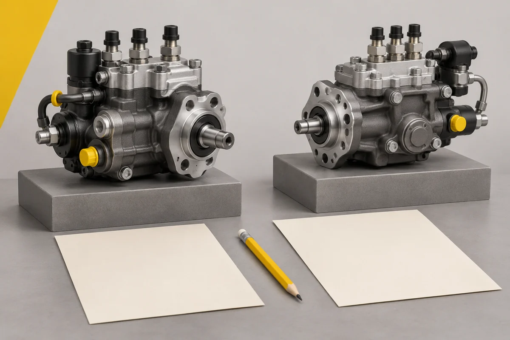

Два предложения на одну запчасть: как сравнить условия покупки

Один поставщик прислал цену в сообщении, другой выставил счёт. Первая сумма ниже, но пока непонятно, включён ли НДС, есть ли нужное количество и когда возможна отправка. Сравнивать такие ответы только по последней цифре рано: сначала нужно привести предложения к одинаковому составу и условиям.
Для этого не нужна сложная система оценки. Достаточно одной таблицы, в которой напротив каждого существенного условия стоят два подтверждённых ответа. Пустая ячейка обозначает вопрос поставщику, а не повод самостоятельно дописать удобное предположение.
Сначала определите состав сравнения
Зафиксируйте полный артикул и исполнение, количество, единицу продажи, согласованное состояние и комплектность. Если в одном ответе указан узел в сборе, а в другом отдельная составляющая, общей основы для сравнения ещё нет. Разницу нужно выяснить до обсуждения скидки.
Особенно внимательно посмотрите на количество. Цена за одну штуку, упаковку и весь заказ может выглядеть одинаково убедительно в коротком сообщении. Попросите раскрыть цену за единицу и сумму по строке. Предложенную замену вынесите отдельно и согласуйте её применимость с ответственным за подбор.
За основу удобно взять карточку конкретной позиции, например ТНВД Bosch 0445020089. Ссылка помогает указать предмет запроса; условия своей поставки каждый продавец подтверждает отдельно.
Сведите деньги и сроки в одну таблицу
Заполните одинаковые строки для обоих предложений:
| Что сравнить | Какой ответ нужен |
|---|
| Стоимость товара | Цена за единицу и сумма за нужное количество |
| НДС | Включён ли он в указанную сумму |
| Доставка | Кто оплачивает, известна ли стоимость или пока только оценка |
| Дополнительные платежи | Какие согласованные расходы входят в расчёт |
| Готовность к отправке | Дата или подтверждённое условие отгрузки |
| Прибытие | Ориентир перевозчика отдельно от даты отгрузки |
| Оплата | Когда и на каком основании требуется платёж |
| Действие предложения | До какого момента подтверждены цена и доступность |
Складывайте только сопоставимые суммы. Если доставка одного заказа рассчитана, а другого ещё нет, второй итог пока остаётся открытым. Оценку перевозчика тоже полезно сохранить отдельно от подтверждённой стоимости товара: позднее будет видно, из-за чего изменился расчёт.
Уточните, что означает обещанный срок
"Отправим завтра" и "получите завтра" описывают разные события. Уточните, к какой дате относится обещание и от чего оно зависит: поступления оплаты, подтверждения комплектации или передачи груза перевозчику.
Если запчасть нужна к назначенному ремонту, сообщите эту дату заранее. Затем проверьте, остаётся ли время на перевозку и приёмку. Низкая цена не компенсирует задержку автоматически, но стоимость простоя тоже не стоит придумывать. Её может оценить только владелец техники по своим работам и обязательствам.
Сохраните договорённости вместе с предложением
До оплаты запросите описание комплекта, перечень документов и условия гарантии для выбранной поставки. Если потребуется возврат или обнаружится несоответствие, пригодится согласованный порядок обращения: кому писать, какие сведения передать и какие документы сохранить.
Зафиксируйте ответы в переписке или документах, на которые можно сослаться. Когда цена обсуждается в одном чате, комплект в другом, а срок по телефону, итоговое решение трудно проверить даже самому закупщику. Краткое подтверждение всех согласованных условий помогает собрать их в одном месте.
Выбирайте по условиям конкретного заказа
После заполнения таблицы разница станет предметной: у одного предложения ниже итоговая стоимость, у другого подтверждена более ранняя отгрузка, по третьему ещё неясна комплектация. Решение можно принять с учётом бюджета и срока ремонта, сохранив причины выбора.
У СМ ТЕХНО цены на сайте указаны с НДС. Условия оплаты и доставки помогут подготовить запрос; стоимость перевозки и дату отгрузки уточните для своего заказа. Сопоставимый расчёт начинается с одинаковых вопросов каждому поставщику.